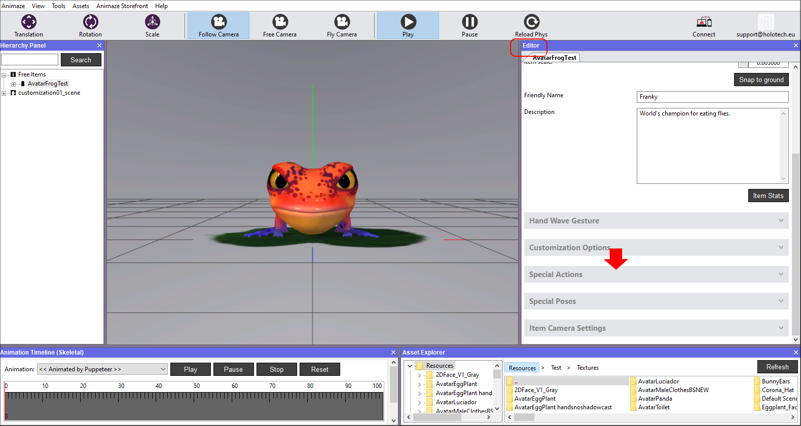
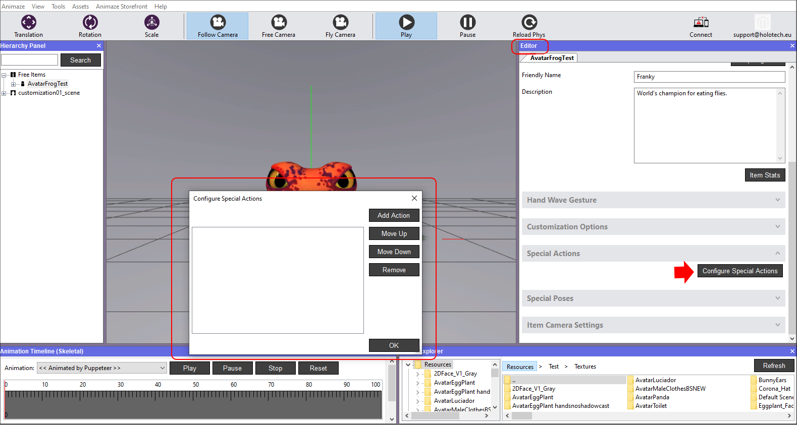
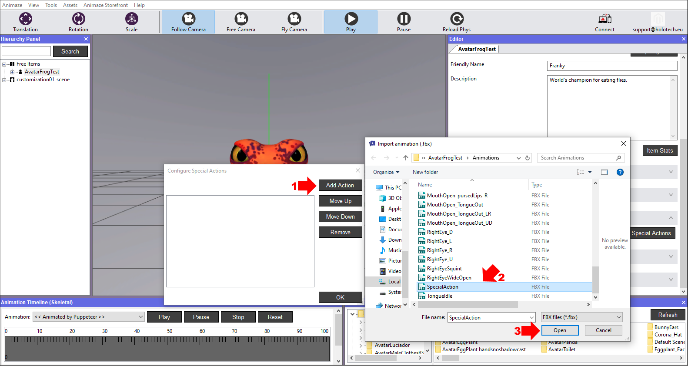
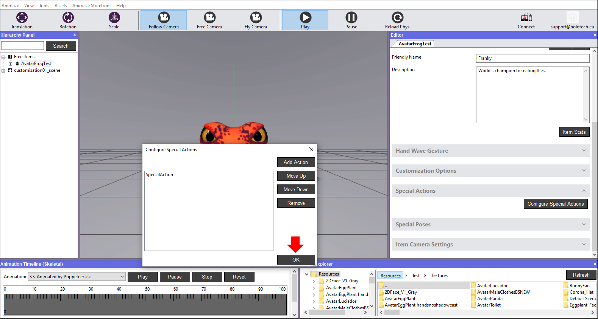
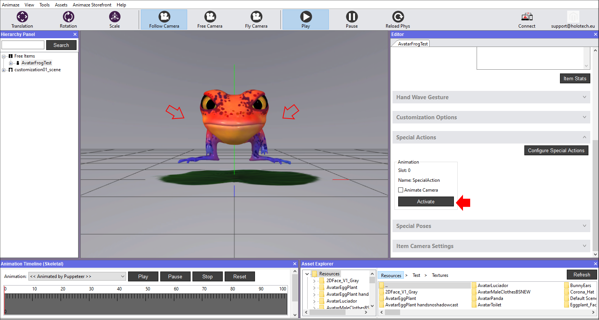
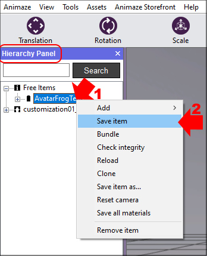

アバターの特殊アクションを設定する方法
特殊アクションは、ユーザーが実行させるアニメーションであり、顔のトラッキングのリターゲティングシステムの一部ではありません。特殊アクションとしては、アバターに表示させたいかっこいいダンスの動きなどを想像してください。
特殊アクションの可能性は無限大ですが、「特殊アクションのアニメーションは階層内の全ボーンにエクスポートしなければならない」というルールは守る必要があります。
他のアニメーションと同様、*.fbxという形式であり、Animazeエディター内で追加したり、調整したり、削除したりできます。
特殊アクションを設定する手順：
-
Animazeエディターを開きます
エディターパネルで「特殊アクション」バーをクリックし、展開させます

-
「特殊アクションを設定」ボタンをクリックすると、設定ウィンドウが開きます

-
「アクションを追加」ボタンをクリックし、.fbxファイルを含むソースフォルダーから特殊アクションのアニメーションを選択して、「開く」を押します。
ソースフォルダーの場所と名前は保存場所とフォルダーに付けた名前により異なりますので、ご注意ください。フォルダーのデフォルト名は「AvatarFrogTest」です。

-
OKをクリックしてアニメーションの追加を終えます。

-
「実行」ボタンをクリックして、アニメーションを実行させ、アバターがアクションを実行するのを確認します

-
作業を終えたら、階層パネルでアバターを保存します

これで特殊アクションを設定できました